Visual TrueType Talk (VTT Talk) is a high-level programming language that can be used to hint TrueType outlines. VTT Talk commands are compiled by Visual TrueType into lower level code that is inserted into the hinted font.
This Language Reference assumes you have previous hinting experience and are familiar with Visual TrueType. Form more information about using Visual TrueType to enter and compile VTT Talk, see the Visual TrueType User Guide.
Visual TrueType can also be used to create and edit low-level TrueType instructions. This User’s Guide contains an appendix covering syntactical requirements for low-level commands as entered in VTT. The commands themselves are discussed in depth in the OpenType Font File Specification.
Command |
Abbrev |
Type |
Description |
|---|---|---|---|
AL |
Action |
Realign child points with hinted parent points |
|
AS |
Action |
Low-level (TrueType) instructions embedded within VTT Talk |
|
DS |
Action |
Control width of diagonal stroke |
|
F |
Action |
Touches untouched points on a diagonal feature |
|
G |
Informative |
Control sidebearing space at small sizes |
|
H |
Informative |
Set height of point to specified CVT value |
|
IN |
Action |
Ensure a point goes exactly at intersection |
|
IS |
Action |
Control width of italic stroke with serifs |
|
M |
Informative |
Identify angle of the main stroke |
|
Q |
Protect alterations made in the low-level language |
||
SC |
Action |
Control the shape of a shallow curve |
|
SE |
Action |
Controls a serif shape |
|
SETITALICSTROKEA |
Informative |
Specifies the italic stroke angle |
|
SETITALICSTROKEP |
Informative |
Specifies the italic stroke phase |
|
SM |
Action |
Smooth the curve |
|
ST |
Informative or Action |
Identify feature as stroke if horizontal or vertical. Control stroke if diagonal |
|
VACUFORMR |
Action |
Ensures that single pixel curves remain single pixel |
|
VACUFORML |
Informative |
Restricts size at which VACUFORMROUND will be used |
|
XA |
Action |
Round and position point in x direction |
|
XDE |
Action |
At a specified ppem, move point in x direction |
|
XDI |
Action |
Controls horizontal distance between two specified points |
|
XDOU |
Informative |
Causes subsequent LINK or ANCHOR command to move outline to either the vertical pixel boundary or halfway between vertical pixel boundaries |
|
XDOW |
Informative |
Causes subsequent LINK or ANCHOR command to move outline left to nearest grid line |
|
XH |
Informative |
Causes subsequent LINK or ANCHOR command to move outline midway between vertical pixel boundaries |
|
XIN |
Action |
Interpolate points in the x direction |
|
XIP |
Action |
Interpolate point position then round to grid in x |
|
XL |
Action |
Regularize horizontal distance between two points |
|
XM |
Action |
Move points horizontally a specified number of pixels |
|
XR |
Informative |
Identify a round x feature |
|
XSH |
Action |
Horizontally shift specified points the same distance as a parent point |
|
XST |
Informative |
Identify feature as a vertical stroke |
|
XU |
Informative |
Causes subsequent LINK or ANCHOR command to move outline right to nearest vertical gridline |
|
YA |
Action |
Round and position point in y direction |
|
YD |
Action |
At a specified ppem, move point in y direction |
|
YDI |
Action |
Controls vertical distance between two specified points |
|
YDOU |
Informative |
Causes subsequent LINK or ANCHOR command to move outline to either the horizontal pixel boundary or halfway between horizontal pixel boundaries |
|
YDOW |
Informative |
Causes subsequent LINK or ANCHOR command to move outline down to nearest horizontal grid line |
|
YH |
Informative |
Causes subsequent LINK or ANCHOR command to move outline midway between horizontal pixel boundaries |
|
YI |
Action |
Interpolate points in the y direction |
|
YIP |
Action |
Interpolate point position then round to grid in y |
|
YL |
Action |
Regularize vertical distance between two points |
|
YM |
Action |
Move points vertically the specified number of pixels |
|
YR |
Informative |
Identify a round y feature |
|
YSH |
Action |
Vertically shift specified points the same distance as a parent point |
|
YST |
Informative |
Identify feature as a horizontal stroke |
|
YU |
Informative |
Causes subsequent LINK or ANCHOR command to move outline up to nearest horizontal gridline |
A number of flags and parameters are common to many VTT Talk commands. The following flags appearing in the Language Reference section are defined here:
AngleFlags specify whether the italic angle or adjusted italic angle should be used:
/ |
(forward slash) specifies the italic angle, which is computed from the italic_run control value. |
Ø |
(Shift-Option-O) specifies the adjusted italic angle, which is the italic angle adjusted so that the endpoints of the stroke fall on the grid. This causes the rise and run values of the slope to be integral. |
Control Flags (> and <)specify which points defining a feature should be stationary, and which points are allowed to float. The point on the open side of the bracket is stationary. For example:
COMMAND_NAME >> (point1, point2, point3, point4)
The first bracket affects point pair point1-point2, the second bracket affects point pair point3-point4. The example above can be thought of as “point1 > point2, point3 > point4”. Point1 and point3 are stationary, point2 and point4 are allowed to float.
The MinimumDistance flag specifies the minimum distance of a feature in pixels. This flag can be used with or without parameters, depending on the distance you are specifying. The distance can be in fractional pixels.
< |
no minimum distance required |
>= |
maintain a minimum distance of one pixel |
>=n |
maintain a minimum distance of n pixels |
>=(n, ppem, n2) |
maintain a minimum distance of n pixels until size ppem, then use a minimum distance of n2 pixels for size ppem and greater. n and n2 can be fractional values. |
This command reference uses the following conventions for expressing syntax:
COMMAND_NAME (value [,value] [,value]...)
value |
required argument |
[,value] |
optional argument |
[,value]... |
optional repeated argument |
Values may be point numbers, control value numbers, or other identifiers, as well as actual values. When the behavior of points is dependant on the behavior of other points listed, the points are sometimes referred to as parent and child.
Command abbreviations listed are expanded when you compile the VTT Talk for the glyph.
To make your VTT Talk more readable, you may wish to use underscores within a command name. However, the compiler will accept commands with or without underscores. For example, Y_DOWN_TO_GRID is interpreted the same as YDOWNTOGRID.
You can place comments within the VTT window, the low-level window, the preprogram window, the CVT window, and the font program window. Any text that begins with /* and ends with */ will be ignored by the compiler. For example:
/* This comment will be ignored */
You can enclose a comment within another comment. And you may find it useful to comment out optional parameters of a command. But avoid putting any other portion of a command within a comment.
ALIGN(parentA, child1 [,childn]…, parentB)
Abbreviation: AL
| parentA | endpoint of line |
| child1 | point to be aligned |
| childn | additional points to be aligned |
| parentB | endpoint of line |
ALIGN unconditionally forces all points listed between pointA and pointB to align with the line defined by endpoints pointA and pointB. In the example below, the command would be ALIGN(A,1,2,3,B). This would force points 1, 2 and 3 to align with line AB.
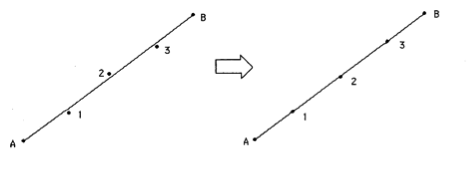
A midpoint to be aligned is moved perpendicular to the line, except if the midpoint is at the corner of a junction, such as in an “F.” In this case, the point is moved along the axis of the intersecting line.
ASM("TrueType instructions")
Abbreviation: AS
This command allows you to embed low-level TrueType instructions within VTT Talk. This had previously been required to handle deltas and rounding states. These effects can now be controlled using the new VTT Talk commands XDelta, YDelta, XHalfGrid, YHalfGrid, XDownToGrid, YDownToGrid, XUpToGrid, YUpToGrid, XDoubleGrid, and YDoubleGrid.
Try to avoid using the ASM command since the VTT Talk compiler will not check low-level instructions contained within an ASM command. Thus, you may inappropriately change the graphic state, such as the freedom or projection vectors, without the compiler being aware of the change.
DSTROKE controlflags (point1, point2, point3, point4 [,cvt])
Abbreviation: DS
| controlflags | specify which points in the pairs are stationary and which are floating |
| point1 | bottom left control point of stroke |
| point2 | bottom right control point of stroke |
| point3 | top left control point of stroke |
| point4 | top right control point of stroke |
| cvt | width of stroke along the X axis (not perpendicular to the side of the stroke) |
The DSTROKE command is used to control diagonal strokes, such as the arm or tail of a “K.” The DSTROKE command ensures that the left and right edges of the diagonal stroke are parallel, and that the “stair-step” pattern (phase) of the stroke is identical on both sides of the stroke at low ppem sizes. The ISTROKE command (not DSTROKE) is used to control italic stems.
Anchor the top right point of the stroke in y before using the DSTROKE command.
The CVT number specified indicates the width (along the x or y axis, depending on the angle) of the diagonal stroke. If a CVT number is not specified, the compiler will search for a CVT number with the following characteristics:
The DSTROKE command first extrapolates the lines containing the control points and moves the pairs of control points so that they align on the same horizontal or vertical line, as below:
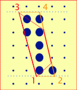
Move point4 and point2 to the heights of point 3 and point1, respectively
The command then controls the distance horizontally or vertically from the stationary control point to the floating control point:
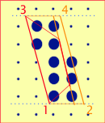
Control the diag. width (full amount of pixels)
Then the floating points are repositioned at their original height, but with the new width.
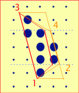
Move point4 and point2 back to their previous heights
Resulting in:
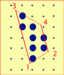
FIXDSTROKES( )
Abbreviation: F
Command Type: Action
This command touches any points in a diagonal stroke that may have been left untouched. This ensures that the SMOOTH command will not change the stroke weight. If all pertinent points have been touched, this command is dropped during compilation.
This command is only necessary when using the STROKE command (not the DSTROKE or ISTROKE commands). When using the STROKE command the top floating point is typically left untouched.
GRABHEREINX (point1, point2)
Abbreviation: G
Command Type: Informative
| point1 | point farthest left on the visual black body area of the glyph |
| point2 | point farthest right on the visual black body area of the glyph |
The GRABHEREINX command is created by the autohinter to calculate and control the left and right sidebearing of a glyph at small sizes. The command affects the control values associated with subsequent LINK commands, causing all sidebearing space to be combined on the right side of a glyph at low ppem sizes.
GRABHEREINX must be followed by LINK commands linking the left sidebearing to point1, and the right sidebearing to point2.
For example, the command GRABHEREINX(1,2) would have the following effect on a glyph when the sum of the sidebearing values are a pixel or less.
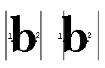
This command is more likely to have an effect on sans serif fonts, because serif fonts are typically designed with extra space to ensure that serifs do not run together.
HEIGHT(point1, cvt1)
Abbreviation: H
Command Type: Informative
| point1 | point whose height is being set |
| cvt1 | CVT number with height value |
The HEIGHT command allows you to specify the height a point by associating it with a control value. HEIGHT will have no effect until an ANCHOR command is encountered.
You can also set the height of a point using only the YANCHOR command, which contains both point and height arguments.
| Square cap height characters | Round cap height characters |
BDEF |
CGOS |
INTERSECT(point1, point2, point3, point4, point5)
Abbreviation: IN
Command Type: Action
| point1 | point to be placed at intersection of two lines |
| point2 | endpoint of first line |
| point3 | endpoint of first line |
| point4 | endpoint of second line |
| point5 | endpoint of second line |
This command ensures that pointl will be placed at the intersection of the two lines described by the line from point2 to point3 and point4 to point5. Only use this command if point1 is actually located at the intersection in the original outline, otherwise the outlines will never be rendered truthfully to the original shapes.
ISTROKE controlflags (point1, point2, point3, point4, cvt1, cvt2, phaseFlag [,cvt3])
Abbreviation: IS
Command Type: Action
| controlflags | specify which points in the pairs are stationary and which are floating |
| point1 | bottom left control point of stroke |
| point2 | bottom right control point of stroke |
| point3 | top left control point of stroke |
| point4 | top right control point of stroke |
| cvt1 | bottom serif height (or baseline if sans serif) |
| cvt2 | top serif height (or cap height if sans serif) |
| phaseFlag | 0,1,2, or 3 (see below) |
| cvt3 | width of stroke along the X axis (not perpendicular to the side of the stroke) |
Use ISTROKE to control the width and phase (stair-step pattern) of an italic stroke. ISTROKE works specifically for italic strokes that are closer to vertical than horizontal. Anchor the top right point of the stroke in y before using the ISTROKE command.
ISTROKE>>(2,9,3,8,32,29,3,61)
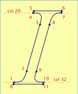
ISTROKE first extrapolates the upper control points to the bottom of the top serif, and extrapolates the lower control points to the top of the bottom serif. Then the floating side of the stroke is moved to be the width in X (along the X axis) as specified by cvt3.
The compiler uses the italic_run cvt to control the italic run of the glyph.
Cvt3 indicates the width (along the x axis) of the diagonal stroke. If a CVT number is not specified, the compiler will search for a CVT number with the following characteristics:
For glyphs with a junction in the middle of the italic stem, such as a “B,” the points at the top and bottom of the middle bar need to be interpolated after the ISTROKE command so that they stay properly aligned with the side of the stem.
The Phase Flag is used in the ISTROKE command to control the “stair-stepping” pattern of the italic or diagonal stroke. The VTT compiler accomplishes this by shifting the italic stroke in quarters of a pixel in the X direction, depending on the Phase Flag value, as follows:
| Phase Flag | 0 | 1 | 2 | 3 |
|---|---|---|---|---|
| X pixel shift | 0 | ¼ | ½ | ¾ |
For the italic stroke below, shifting the stroke these fractional pixel values creates the following results:
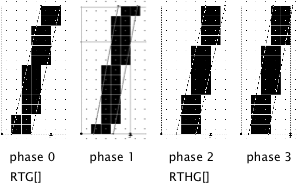
In general, phase 3 creates the most attractive result.
MAINSTROKEANGLE(angleValue*100)
Abbreviation: M
Command Type: Informative
The MAINSTROKEANGLE command is an informative command identifying the angle of the glyphs in a font. For example, the main stroke angle of Times New Roman is 90 degrees; thus,
MAINSTROKEANGLE(9000)
This command is used when controlling an italic stroke with the STROKE command. The new ISTROKE command uses the italic_run value in the CVT instead of the main stroke angle.
If used, the main stroke angle must correspond with the italic_run control value in the CVT.
Use the measuring tool to calculate the main stroke angle for the font, as well as the italic run control value, by measuring the stem on a character such as “I.”
QUIT( )
Abbreviation: Q
After compiling the VTT Talk code for a glyph, you may choose to edit the low-level TrueType instructions. Such edits will be overwritten the next time the VTT Talk is compiled for the glyph. To preserve your changes you will need to use the QUIT command.
Place the QUIT command as the first line of code in the VTT Talk window after making any changes to the compiled TrueType instructions. This will prevent the compiler from recompiling the VTT Talk for the glyph. However, note that any further changes to the glyph’s VTT Talk will not be incorporated into the TrueType instructions, unless you choose to remove the QUIT command and recompile the glyph.
SCOOP(point1, point2, point3)
Abbreviation: SC
Command Type: Action
| point1 | endpoint of feature |
| point2 | deepest point of scoop |
| point3 | endpoint of feature |
The SCOOP command controls the shape of a shallow curve. SCOOP is similar to the ALIGN command, controlling the placement of midpoints on a line. Before using the SCOOP command, you must have touched the endpoints of the feature (point1 and point3). SCOOP controls the distance to point2 in x or y.
The SCOOP command is not commonly used, except by the autohinter.
SERIF orderflag (serifType, point1, point2 [,additional points depending on the type of serif])
Abbreviation: SE
Summary: Identifies a serif shape
| orderflag | > or <, depending on the order of the points |
| serifType | 0, 1, 2, 3, 4 as described below |
| point1 | point number |
| point2 | point number |
| [,additional points] | additional points are listed depending on the type of serif |
The SERIF command indicates the type of serif being used. The SERIF command is a high-level method of specifying a collection of links which control various serif designs. The SERIF command is not commonly used, except by the autohinter.
The SERIF instruction requires that certain points on the outline have already been set. For instance, at the base of an “I” the 2 points on the baseline must have their height fixed since this value is used in controlling the thickness of the serif. Similarly, the width of the stem must have been controlled before the serif instruction, since the stem width is used to set the serif length. The small arrows in the serifType illustration which follows indicate which points have to be touched and in which axis the points are positioned before the serif command is used.
The orderflag which directly follows the SERIF command indicates whether the point numbers which follow are in ascending or descending order. If the point numbers are ordered as 10, 11, 12, 13, 14, the > symbol is used. If the point numbers are ordered as 14, 13, 12, 11, 10, the < symbol would be used.
To date, there are 5 serifType flags that you may use, as illustrated below and described on the next page.
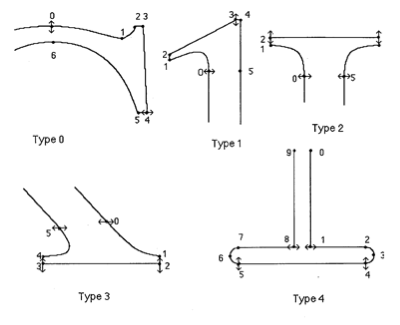
SerifType 0 is found in fonts like Times and is present in the characters “CSG.” For this serif, seven point numbers must follow the serifType, i.e. SERIF>(0,0,1,2,3,4,5,6).
SerifType 1 is also a Times serif found on the lower case characters “bdhijl.” This serif type has four points, i.e. SERIF>(1,0,1,2,4).
SerifType 2 is the main vertical stem serif which occurs in characters “IHJLT.” This serif type needs to be stated in two halves, also allowing you to use the same command for the serifs on the B and D characters, where only half of the serif illustrated above is required. To describe the left half of the serif use SERIF<(2,3,2,1,0), and for the right half use SERIF>(2,2,3,4,5).
SerifType 3 is a diagonal Times serif, present in the characters “AKVWXY.” This serif type is similar to type 2 as it is also described in two halves. The left half would be described as SERIF>(3,2,3,4,5), and the right half as SERIF<(3,3,2,1,0).
SerifType 4 is the Courier serif, which also is described in two halves. The left half is described as SERIF>(4,4,5,6,7,8,9), and the right half as SERIF<(4,5,4,3,2,1,0). When hinting Courier, this serif type is also used for diagonal stems adjoined to serifs, such as in the characters “XVAYW.”
These commands influence the way the STROKE command controls diagonal strokes. In previous versions of VTT Talk, the STROKE command was the best way of controlling diagonal strokes. However, diagonal strokes and italic stems can now be controlled with the DSTROKE and ISTROKE commands, respectively.
By using the SET_ITALIC_STROKE_ANGLE command, you are telling the compiler to regularize the angle of italic strokes in the font. The angle value used is known as the “adjusted italic angle,” which is the italic angle adjusted so that the endpoints of the stroke fall on the grid. This causes the rise and run values of the slope to be integral.
Using the SET_ITALIC_STROKE_PHASE command tells the compiler to regularize the phase of italic strokes in the font. The phase setting used is phase 0. You can obtain alternate stair-step effects using the ISTROKE command with its phase parameter, instead of the STROKE command.
SMOOTH( )
Abbreviation: SM
This instruction does a smoothing operation to all the untouched points in the x and y direction. The instruction should not be used in glyphs where every point has been hinted in x and y, since it would only make things bigger and slower.
SMOOTH is commonly used as the last VTT Talk command for a glyph.
STROKE controlflags (point1, point2, point3, point4 [,cvt1])
Abbreviation: ST
| point1 | bottom left control point of stroke |
| point2 | bottom right control point of stroke |
| point3 | top left control point of stroke |
| point4 | top right control point of stroke |
| cvt1 |
In previous versions of VTT Talk, the STROKE command was the best way of controlling diagonal strokes. However, diagonal strokes can now also be controlled with the DSTROKE and ISTROKE commands.
The STROKE command also was useful as an informative command when identifying horizontal or vertical strokes. However, we now advise that you use the YSTROKE and XSTROKE commands to unambiguously identify horizontal and vertical strokes. This will allow the compiler to properly interpret XLINK and YLINK commands for the stroke.
When used with the commands SET_ITALIC_STROKE_ANGLE and SET_ITALIC_STROKE_PHASE, STROKE hints a feature by extrapolating the bottom pair of control points to the baseline. This may not give the best results when hinting a diagonal feature with a serif. For serif italic features, use the ISTROKE command, which hints the feature by extrapolating the control points to the bottom of the top serif, or the top of the bottom serif, not all the way to the baseline or cap height.
When working with diagonal strokes, the two stationary points (as specified by the controlflags) should be fixed both horizontally and vertically before the STROKE command is used.
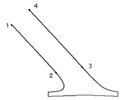
VACUFORMLIMIT(ppem)
VACUFORMROUND flags (cvt1, cvt2, point1, point2, point3, point4)
Abbreviation: VACUFORMR
Command Type: Action
The VACUFORMROUND command forces circular curves into an octagonal shape. This is very easy to grid fit with a consistent line width as it contains only horizontal , vertical, and 45 degree lines. Because of the simplicity of the shapes, this command can ensure that curves of a single pixel remain exactly a single pixel in width.
You will probably never author a VACUFORMROUND command yourself, as the required parameters are complex. However, you will use VACUFORMROUND commands that the autohinter generates. For a single O shape, four VACUFORMROUND commands will be generated, each controlling the “curve” from one side of the octagon to the next.
This command will only be executed if the line width is the same as the minimum width. This will usually be set to one pixel. If the line width is larger than the minimum width, this command is ignored.
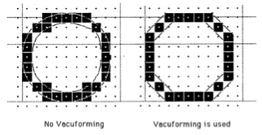
Parameters describing the curve and radius values are difficult to compute, so the VACUFORMROUND command requires special control values in the CVT, as well as specific storage numbers in the preprogram. It is difficult to manually create all values needed for this command to work properly, so we suggest using this command only when it is generated by the autohinter.
The VACUFORMLIMIT command as an informative command that may preceed the VACUFORMROUND command. VACUFORMLIMIT turns off VACUFORMROUND starting at the ppem size specified.
XANCHOR [angleFlag] (point1)
Abbreviation: XA
Command Type: Action
| angleFlag | italic or adjusted italic angle |
| point1 | point to anchor |
The XANCHOR command rounds the specified point to the grid according to the rounding state, effectively anchoring the point. This command is usually used prior to a series of LINK commands, anchoring the “grandfather” point. If you create a series of links that begins from a sidebearing point, you do not need to use the XANCHOR command.
The YANCHOR command works somewhat differently, allowing you to specify an optional CVT number (height) at which to anchor the point.
XDELTA(point1, dist@ppemRange [,dist@ppemRange]...)
Abbreviation: XDE
| point1 | point number to move |
| dist@ppemRange | fractional number of pixels to shift point1 within ppem size range |
| dist@ppemRange | additional pixel shift values and ppem size ranges |
The XDELTA command is used to shift points a specified number of pixels along the x axis at a specific ppem size or range of sizes.
Distances to be shifted can be expressed as fractions or decimal values (1/8 or .125). Ranges are expressed as begin..end;additional.
For example, to move point number 9 the distance of 1/8 pixel for ppem sizes 6, 7, 8, and 11:
XDELTA(9, 1/8@6..8;11)
Points are usually shifted in eighths of a pixel (i.e., 1/8, -1/8, 5/8), although the rasterizer can shift a point in increments of 1/64 of a pixel.
Use DELTA commands carefully, as they can potentially generate a lot of low-level code upon compilation.
XDIST(point1, point2, [minimumDistance])
Abbreviation: XDI
Command Type: Action
| point1 | point number |
| point2 | point number |
| minimumDistance | minimum distance flag and optional parameters (see “General Flags and Parameters”) |
The XDIST command controls the horizontal distance between point1 and point2. If you omit the minimumDistance flag and parameters, the compiler will use the default minimum distances: 1/2 or 1 pixel for black features (depending on rounding state); and 0 pixels for gray and white features.
XDOUBLEGRID(point1 [,pointn]...)
Abbreviation: XDOU
Command Type: Informative
| point1 | point to round |
| pointn | additional points to round |
The XDOUBLEGRID command controls the rounding state for a specified point or series of points. Subsequent LINK or ANCHOR commands will move the points along the x axis to the nearest grid line or half grid line, whichever is closest to the point.
XDOWNTOGRID(point1 [,pointn]...)
Abbreviation: XDOW
Command Type: Informative
| point1 | point to round |
| pointn | additional points to round |
The XDOWNTOGRID command controls the rounding state for a specified point or series of points. Subsequent LINK or ANCHOR commands will move the points down along the x axis (left) to the nearest grid line.
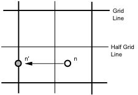
XHALFGRID(point1 [,pointn]...)
Abbreviation: XH
Command Type: Informative
| point1 | point to round |
| pointn | additional points to round |
The XHALFGRID command controls the rounding state for a specified point or series of points. Subsequent LINK or ANCHOR commands will move the points midway between the vertical pixel boundaries.
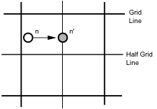
XINTERPOLATE [angleFlag] (parentA, child1 [,childn]..., parentB)
Abbreviation: XIN
Command Type: Action
| parentA | endpoint of line |
| child1 | point to be interpolated |
| childn | additional points to be interpolated |
| parentB | endpoint of line |
The XINTERPOLATE command moves the specified child points so that they maintain the same relationship (proportional distance) in x with the hinted parent point.
The child points must fall within the x interval defined by the parent points.
If the angleFlag is absent, XINTERPOLATE works purely in the x direction.
XIPANCHOR [angleFlag] (parentA, child1 [,childn]..., parentB)
Abbreviation: XIP
Command Type: Action
| parentA | endpoint of line |
| child1 | point to be interpolated |
| childn | additional points to be interpolated |
| parentB | endpoint of line |
XIPANCHOR combines the INTERPOLATE and ANCHOR commands. The command first interpolates the child points and then rounds them to the grid according to the rounding state, effectively anchoring the child points.
As with the XINTERPOLATE command, the child points must fall within the x interval defined by the parent points.
If the angleFlag is absent, XIPANCHOR works purely in the x direction.
XLINK [angleFlag] (point1, point2 [,cvt1] [,minimumDistance])
Abbreviation: XL
Command Type: Action
| angleFlag | italic or adjusted italic angle |
| point1 | point number |
| point2 | point number |
| cvt1 | CVT number specifying distance value |
| minimumDistance | minimum distance in pixels |
XLINK controls the horizontal distance between two points. You can either specify a CVT number for the distance, or allow the XLINK command to find and use the closest CVT value based on the character group and feature type (as specified in the CVT comments). A previously used XROUND or XSTROKE command will influence the control value chosen upon compilation. You must label glyph features with such informative commands for the compiler to choose correct control values.
The minimumDistance parameter forces the feature identified by the XLINK command to have a minimum width. By default, black features have a minimum distance of 1 pixel, and white (and gray) features have a minimum distance of 0 pixels.
The default values for minimum distance depend on the rounding method in use. A MinimumDistance of ½ pixel may be used to comply with previously used rounding methods.
If you want to force the distance between two points (as specified by the outline) to be preserved, use the XDIST and YDIST commands, not the LINK commands.
XMOVE(value, point1 [,pointn]...)
Abbreviation: XM
Command Type: Action
| value | number of pixels (may be fractional) |
| point1 | point number to move |
| pointn | additional point numbers to move |
Moves one or more points along the x axis by a specific pixel amount, e.g., 1, 0.5, 1.25
For example, to move point 19 by ¼ of a pixel in the x direction, use:
XMOVE(0.25,19)
XROUND(point1, point2)
Abbreviation: XR
Command Type: Informative
The XROUND command is an informative command used to identify curves. Identifying the curves helps the compiler choose a control value from the CVT that a subsequent LINK command will use.
For example:
XROUND(1,2)
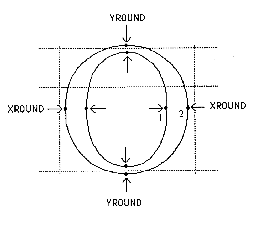
XSHIFT(parent1, child1 [,childn]...)
Abbreviation: XSH
Command Type: Action
| parent1 | parent point |
| child1 | child point to shift |
| childn | additional child points |
The XSHIFT command shifts the specified child points in the x direction by the same amount as the parent has been moved during previous hinting.
XSTROKE(point1, point2, point3, point4 [,cvt1])
Abbreviation: XST
Command Type: Informative
| point1 | bottom left point |
| point2 | bottom right point |
| point3 | top left point |
| point4 | top right point |
| cvt1 | width of stroke |
This command identifies a feature as a vertical stroke. This enables a subsequent LINK command to choose the appropriate control value.
XUPTOGRID(point1 [,pointn]...)
Abbreviation: XU
Command Type: Informative
| point1 | point to round |
| pointn | additional points to round |
The XUPTOGRID command controls the rounding state for a specified point or series of points. Subsequent LINK or ANCHOR commands will move the points up along the x axis (right) to the nearest grid line.
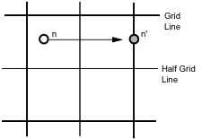
YANCHOR [angleFlag] (point1 [,cvt1])
Abbreviation: YA
Command Type: Action
| angleFlag | italic or adjusted italic angle |
| point1 | point to anchor |
| cvt1 | control value number (a height value) |
The YANCHOR command rounds the specified point to the grid according to the rounding state, effectively anchoring the point. This command is usually used prior to a series of LINK commands, anchoring the “grandfather” point.
The YANCHOR command allows you to specify an optional CVT number (a height value) at which to anchor the point. For example, you may anchor a point to the cap height control value. If you do not specify a CVT number, the compiler determines the height at which to anchor the point by evaluating the unhinted outline.
Using the YANCHOR command with the cvt parameter is the equivalent of using a combination of the HEIGHT command and the YANCHOR command. For example, YANCHOR (7,8) is the equivalent of:
HEIGHT (7,8)
YANCHOR (7)
YDELTA(point1, dist@ppemRange [,dist@ppemRange]...)
Abbreviation: XDE
| point1 | point number to move |
| dist@ppemRange | fractional number of pixels to shift point1 within ppem size range |
| dist@ppemRange | additional pixel shift values and ppem size ranges |
The YDELTA command is used to shift points a specified number of pixels along the y axis at a specific ppem size or range of sizes.
Distances to be shifted can be expressed as fractions or decimal values (1/8 or .125). Ranges are expressed as beginValue..endValue;additionalValues.
For example, to move point number 9 the distance of 1/8 pixel for ppem sizes 6, 7, 8, and 11, write:
YDELTA(9, 1/8@6..8;11)
Points are usually shifted in eighths of a pixel (i.e., 1/8, -1/8, 5/8), although the rasterizer can shift a point in increments of 1/64 of a pixel.
Use DELTA commands carefully, as they can potentially generate a lot of low-level code upon compilation.
YDIST(point1, point2, [minimumDistance])
Abbreviation: YDI
Command Type: Action
| point1 | point number |
| point2 | point number |
| [minimumDistance] | minimum distance flag and optional parameters (see “General Flags and Parameters”) |
The YDIST command controls the vertical distance between point1 and point2. If you omit the minimumDistance flag and parameters, the compiler will use the default minimum distances: 1/2 or 1 pixel for black features (depending on rounding state); and 0 pixels for gray and white features.
YDOUBLEGRID(point1 [,pointn]...)
Abbreviation: YDOU
Command Type: Informative
| point1 | point to round |
| pointn | additional points to round |
The YDOUBLEGRID command controls the rounding state for a specified point or series of points. Subsequent LINK or ANCHOR commands will move the points along the y axis to the nearest grid line or half grid line, whichever is closest to the point.
YDOWNTOGRID(point1 [,pointn]...)
Abbreviation: YDOW
Command Type: Informative
| point1 | point to round |
| pointn | additional points to round |
The YDOWNTOGRID command controls the rounding state for a specified point or series of points. Subsequent LINK or ANCHOR commands will move the points down along the y axis to the nearest grid line.
YHALFGRID(point1 [,pointn]...)
Abbreviation: YH
Command Type: Informative
| point1 | point to round |
| pointn | additional points to round |
The YHALFGRID command controls the rounding state for a specified point or series of points. Subsequent LINK or ANCHOR commands will move the points midway between the horizontal pixel boundaries.
YINTERPOLATE [angleFlag] (parentA, child1 [,childn]..., parentB)
Abbreviation: YIN
Command Type: Action
| parentA | endpoint of line |
| child1 | point to be interpolated |
| childn | additional points to be interpolated |
| parentB | endpoint of line |
The YINTERPOLATE command moves the specified child points so that they maintain the same relationship (proportional distance) in y with the hinted parent point.
The child points must fall within the y interval defined by the parent points.
If the angleFlag is absent, YINTERPOLATE works purely in the y direction.
YIPANCHOR [angleFlag] (parentA, child1 [,childn]..., parentB)
Abbreviation: YIP
Command Type: Action
| parentA | endpoint of line |
| child1 | point to be interpolated |
| childn | additional points to be interpolated |
| parentB | endpoint of line |
YIPANCHOR combines the INTERPOLATE and ANCHOR commands. The command first interpolates the child points and then rounds them to the grid according to the rounding state, effectively anchoring the child points.
As with the YINTERPOLATE command, the child points must fall within the x interval defined by the parent points.
If the angleFlag is absent, YIPANCHOR works purely in the y direction.
YLINK [angleFlag] (point1, point2 [,cvt1] [,minimumDistance])
Abbreviation: YL
Command Type: Action
| angleFlag | italic or adjusted italic angle |
| point1 | point number |
| point2 | point number |
| cvt1 | CVT number specifying distance value |
| minimumDistance | minimum distance in pixels |
YLINK controls the horizontal distance between two points. You can either specify a CVT number for the distance, or allow the YLINK command to find and use the closest CVT value based on the character group and feature type (as specified in the CVT comments). A previously used YROUND or YSTROKE command may influence the control value chosen upon compilation. You must label glyph features with such informative commands for the compiler to choose correct control values.
The minimumDistance parameter forces the feature identified by the YLINK command to have a minimum width. By default, black features have a minimum distance of 1 pixel, and white (and gray) features have a minimum distance of 0 pixels.
The default values for minimum distance depend on the rounding method in use. A MinimumDistance of 1/2 pixel may be used to comply with previously used rounding methods.
If you want to force the distance between two points (as specified by the outline) to be preserved, use the XDIST and YDIST commands, not the LINK commands.
YMOVE(value, point1 [,pointn]...)
Abbreviation: YM
Command Type: Action
| value | number of pixels (may be fractional) |
| point1 | point number to move |
| pointn | additional point numbers to move |
Moves one or more points along the y axis by a specific pixel amount, e.g., 1, 0.5, 1.25
For example, to move point 19 by 1/4 of a pixel in the y direction, use:
YMOVE(0.25,19)
YROUND(point1, point2)
Abbreviation: YR
Command Type: Informative
The YROUND command is an informative command used to identify curves. This assists the compiler in choosing control values associated with curves. These compiler will use these values in a subsequent LINK command
For example:
YROUND(3,4)
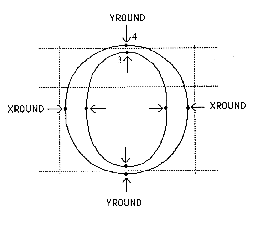
YSHIFT(parent1, child1 [,childn]...)
Abbreviation: YSH
Command Type: Action
| parent1 | parent point |
| child1 | child point to shift |
| childn | additional child points |
The YSHIFT command shifts the specified child points in the y direction by the same amount as the parent has been moved during previous hinting.
YSTROKE(point1, point2, point3, point4 [,cvt1])
Abbreviation: YST
Command Type: Informative
| point1 | top left point |
| point2 | bottom left point |
| point3 | top right point |
| point4 | bottom right point |
| cvt1 | width of stroke |
This command identifies a feature as a horizontal stroke. This enables a subsequent LINK command to choose the appropriate control value.
YUPTOGRID(point1 [,point2]...)
Abbreviation: YU
| point1 | point to round |
| pointn | additional points to round |
The YUPTOGRID command controls the rounding state for a specified point or series of points. Subsequent LINK or ANCHOR commands will move the points up along the y axis to the nearest grid line.
The VTT Talk Compiler will report syntactical errors when it encounters commands it doesn’t “understand.” This chapter contains a list of these errors, as well as various troubleshooting tips.
Sometimes the compiler will give an error message that may be confusing depending on the context. For example, if you mistakenly use a decimal for a comma in the XLINK command,
XLINK(0.12)
the compiler reports:
“integer number expected (example: 1)”
The compiler doesn’t “second-guess” your decision (or mistake) in using the decimal, but reports the problem as an unexpected data type.
Some other errors the compiler will notify you of are:
The compiler also reports errors regarding misused or missing CVT numbers. For example, the compiler will report an error if a CVT number is referenced that does not exist in the Control Value Table.
The compiler will not accept the STROKE, DSTROKE, or ISTROKE commands if it can’t find control values in the CVT due to incorrect control value commenting. The compiler will also report an error if a feature specified in an XSTROKE or YSTROKE command is too far from horizontal or vertical.
Within VTT you can enter and edit low-level TrueType instructions. The syntax and descriptions of TrueType instructions are presented in the TrueType Font File Specification. However, in VTT the boolean values used as parameters are different than those listed in the font specification
In the font specification, boolean values used as parameters are usually bit settings or flags, having values of 1 or 0. When entering TrueType instructions while in VTT, you will use “friendlier” mnemonic values rather than bit settings or flags. For example:
| MIRP[00000] | Command and boolean values as listed in the TrueType specification |
| MIRP[m<rGr] | Command and mnemonic flags as entered in VTT for the same effect |
The mnemonic values as used in VTT are listed below, along with the low-level values with which they correspond.
| Category | Mnemonic | Description | Spec Value (binary) |
|---|---|---|---|
| Direction | X | X axis | 1 |
| Y | Y axis | 0 | |
| Outline | O | Use original outline | 1 |
| N | Use gridfitted outline | 0 | |
| Rounding or Line Relation | R | Round distance; or perpendicular to line | 1 |
| r | Do not round distance; or parallel to line | 0 | |
| Reference Point Autoset | M | Set rp0 to point number on the stack | 1 |
| m | Do not set rp0 | 0 | |
| Reference Point Usage | 1 | Use rp1 | 1 |
| 2 | Use rp2 | 0 | |
| Minimum Distance flag | > | Obey minimum distance | 1 |
| < | Do not obey minimum distance | 0 | |
| Color (Distance type) | Gr | Gray | 00 |
| Bl | Black | 01 | |
| Wh | White | 10 |
The TrueType instructions which use these values are listed below:
| Instruction | Description | Categories of Flags Used |
|---|---|---|
| SVTCA | Set Vectors To Coordinate Axis | Direction |
| SPVTCA | Set Projection Vector To Coordinate Axis | Direction |
| SFVTCA | Set Freedom Vector To To Cordinate Axis | Direction |
| SPVTL | Set Projection Vector To Line | Line Relation |
| SFVTL | Set Freedom Vector To Line | Line Relation |
| MDAP | Move Direct Absolute Point | Rounding |
| IUP | Interpolate Untouched Points | Direction |
| SHP | SHift Point | Reference Point Usage |
| SHC | SHift Contour | Reference Point Usage |
| SHZ | SHift Zone | Reference Point Usage |
| MSIRP | Move Stack Indirect Relative Point | Reference Point Autoset |
| MIAP | Move Indirect Absolute Point | Rounding |
| GC | Get Coordinate value | Outline |
| MD | Measure Distance | Outline |
| ROUND | ROUND | Color |
| NROUND | No ROUND | Color |
| SDPVTL | Set Dual Projection Vector To Line | Line Relation |
| MDRP | Move Direct Relative Point | Must be in this order: Reference Point Autoset, Minimum Distance Flag, Rounding, Color |
| MIRP | Move Indirect Relative Point | Must be in this order: Reference Point Autoset, Minimum Distance Flag, Rounding, Color |
VTT optimizes TrueType instructions when it compiles the low-level text source.
The compiler streamlines stack operations by creating binary code that inserts all required values on the stack before a series of commands. This operation is called a pre-push, and although you can use the command yourself, it is convenient to let the compiler create the equivalent binary code on compilation.
For example, in the compilation below note how the arguments for the SRP, MDRP and MDAP commands are combined in a single pre-push command.
| When you type: | the compiler creates the binary equivalent of this: | |
|---|---|---|
SRP0[], 4 |
#PUSHOFF |
By default, the compiler will automatically use the pre-push optimization. However, you may at times desire more control over the stack and will want to disable the use of pre-push in the compilation. Use the #PUSHON command to set the compiler to automatic pre-push mode. Use the #PUSHOFF command to turn off pre-push compilation.
By using the #PUSH command in your TrueType code, you can force the compiler to optimize storage of the values in your push command by storing them as either bytes (with PUSHB) or words (with PUSHW).
| When you type: | the compiler creates the binary equivalent of this: |
|---|---|
#PUSH, 12,15,-20,257,345,1,2,3,4 |
PUSHB[2],12,15 |